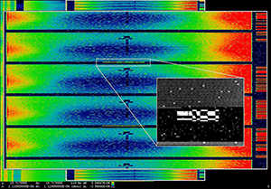
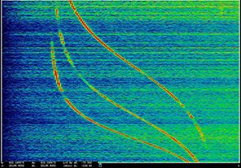

Selections from the ANARCHIST series, 201

Selections from the ANARCHIST series, 2016
Pigmented inkjet prints mounted on aluminum
ANARCHIST is a series of images that the artist has drawn
from the documnets provided to her by Edward Snowden.
They display signals collected through an eponymous
top-secret operation run by the Government Communications
Headquarters(GCHQ), the United Kingdom's surveillance
agency. From the top of the Troodos Mountains on the
island nation of Cyprus, two antennae operating twenty-four
hours a day intercept signals from satellites, drones, and
radars in the Mediterranean region.
The images in ANARHCHIST show various stages in the
process of descrambling the collected signals.
